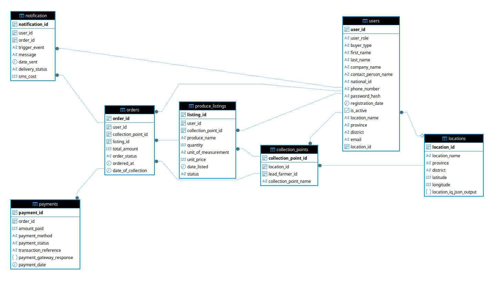
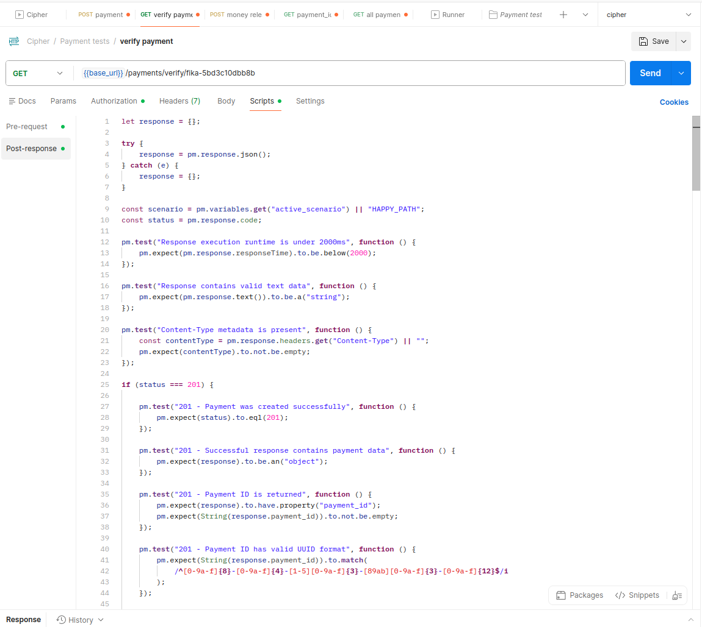
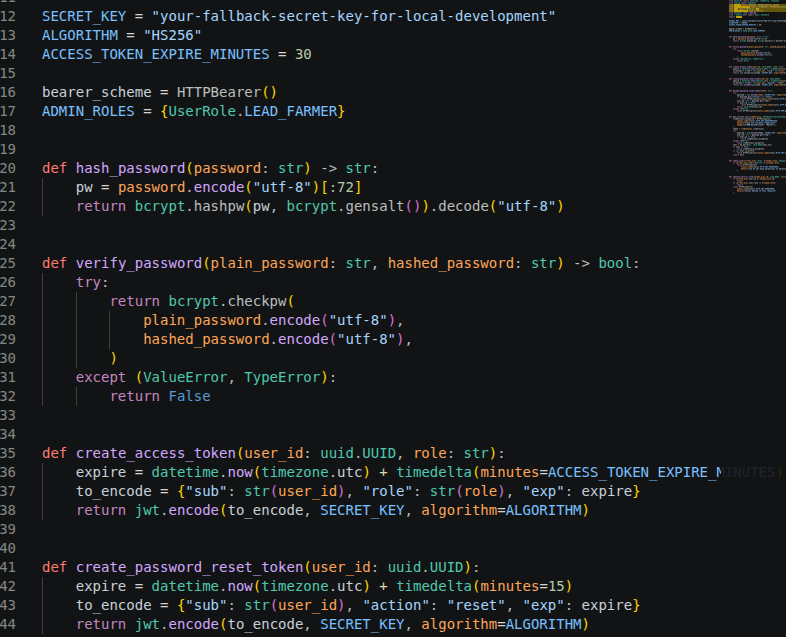

FikaMarket API Reference
Welcome to the FikaMarket API Reference. The FikaMarket backend connects the PWA, USSD service, database, and external services used for produce listings, orders, payments, locations, notifications, and market prices.
Tech Stack
FikaMarket uses the following technologies:
| Component | Technology |
|---|---|
| Framework | FastAPI |
| Language | Python |
| Database | PostgreSQL |
| ORM | SQLAlchemy |
| Database Migration | Alembic |
| Authentication | JWT |
| Password Hashing | bcrypt |
| Hosting | Heroku |
| CI/CD | GitHub Actions |
Live API Documentation
The FikaMarket API is hosted on Heroku.
- Production API: Open FikaMarket API
- Swagger UI: View Swagger Documentation
- OpenAPI Specification: View OpenAPI
Swagger provides an interactive page where developers and testers can view and test the available API endpoints.

Data Models Overview
Backend Architecture
The backend is divided into simple layers. Each layer has a specific responsibility.
PWA / USSD
↓
Routers
↓
Schemas
↓
Services
↓
Repositories
↓
Models
↓
PostgreSQL
- Routers receive requests from the frontend.
- Schemas check that the information is valid.
- Services contain the main business rules.
- Repositories communicate with the database.
- Models describe how information is stored.
This structure keeps the backend organized and easier to maintain.
Main API Endpoints
The API is organized into the following main areas.
Authentication & Users
POST /users/ # Register or create a user
POST /users/login # Login
GET /users/ # Get users
Authentication allows farmers, buyers, and lead farmers to securely access the system.
Produce Listings
POST /produce-listings/ # Create a produce listing
GET /produce-listings/ # View available produce
GET /produce-listings/{id} # View a specific listing
Farmers use produce listings to make crops available to buyers.
Orders
POST /orders/ # Create an order
GET /orders/ # View orders
GET /orders/{id} # View an order
Orders connect buyers with available produce.
Payments
POST /payments/ # Initiate payment
GET /payments/{id} # View payment
GET /payments/ # View payments
Payments are processed through Flutterwave and held in escrow until the collection process is confirmed.
Collection Points
POST /collection-points/ # Create collection point
GET /collection-points/ # View collection points
Collection points identify where buyers collect their produce.
Locations
POST /locations/ # Create or process location
GET /locations/ # View locations
Location information can be processed using LocationIQ to obtain physical addresses.
Notifications
POST /notifications/ # Send notification
GET /notifications/ # View notifications
Notifications are used for SMS and other system messages.
Reference Prices
GET /reference-prices/ # View commodity prices
Market-price information is retrieved from WFP/HDX and stored for use by the platform.
USSD
POST /ussd/ # Handle USSD requests
The USSD service allows farmers to interact with FikaMarket without requiring a smartphone.
The local Swagger documentation is available at:
API Error Handling
The API uses standard HTTP status codes to communicate the result of a request.
| Code | Meaning |
|---|---|
| 200 | Request successful |
| 400 | Invalid or missing information |
| 401 | Authentication required |
| 402 | Payment was not completed |
| 403 | User does not have permission |
| 404 | Requested resource was not found |
| 409 | Request conflicts with existing data |
| 422 | Submitted information is invalid |
| 429 | Too many requests |
| 500 | Server or database error |
| 502 | Bad Gateway |
| 503 | Service Unavailable |
| 504 | Gateway Timeout |
Instead of guessing what went wrong, external systems can instantly identify whether a request succeeded, failed due to a user error, or failed because of a server issue.
Database
FikaMarket uses PostgreSQL to store application data.
The main data models include:
- Users
- Produce Listings
- Orders
- Payments
- Collection Points
- Locations
- Notifications
- Reference Prices
For a detailed explanation of the database tables, fields, relationships, and ERD, see the:
FikaMarket Data Model Documentation
Database changes are managed using Alembic.
External Integrations
The FikaMarket API connects to several external services.
| Service | Purpose |
|---|---|
| Africa's Talking | USSD and SMS |
| Flutterwave | Payment and escrow |
| WFP/HDX | Market-price data |
| LocationIQ | Geocoding |
| Telecom Service | Mobile-money verification |
| Mobile Money | Farmer payouts |
The backend acts as the central connection between these services and the FikaMarket applications.
For example:
Buyer
↓
PWA
↓
FikaMarket API
↓
Flutterwave
↓
Payment / Escrow
↓
Mobile Money
API Testing
The API can be tested using:
- Swagger UI for interactive endpoint testing
- Postman for API test collections
- Automated tests for validation, security, payments, and business rules

postman testing Overview
Testing covers authentication, produce listings, orders, payments, inventory, USSD, notifications, and external integrations.
Postman Test Scripts
The following test scripts can be used in Postman to validate API responses.
Payment - Verifying
let response = {};
try {
response = pm.response.json();
} catch (e) {
response = {};
}
const scenario = pm.variables.get("active_scenario") || "HAPPY_PATH";
const status = pm.response.code;
pm.test("Response execution runtime is under 2000ms", function () {
pm.expect(pm.response.responseTime).to.be.below(2000);
});
pm.test("Content-Type metadata is present", function () {
const contentType = pm.response.headers.get("Content-Type") || "";
pm.expect(contentType).to.not.be.empty;
});
if (status === 201) {
pm.test("201 - Payment was created successfully", function () {
pm.expect(status).to.eql(201);
});
pm.environment.set("payment_id", response.payment_id);
pm.environment.set("tx_ref", response.transaction_reference);
pm.environment.set("checkout_url", response.checkout_url);
}
else if (status === 400) {
pm.test("400 - Payment request contains invalid or missing data", function () {
pm.expect(status).to.eql(400);
});
pm.test("400 - Error response contains detail", function () {
pm.expect(response).to.have.property("detail");
});
}
Code Structure
The backend follows a layered folder structure:
FikaMarket/
├── models/
├── repositories/
├── routers/
├── schemas/
├── services/
├── config.py
├── database.py
├── main.py
├── requirements.txt
└── Procfile
The folders separate database models, API routes, validation, business logic, and database operations.
Python naming conventions are used, including snake_case for files, functions, and variables and PascalCase for classes.
Security Implementation
The implementation safely intercepts, hashes, and validates inbound credentials while restricting access workflows exclusively to verified users.

Security Implementation
Deployment
FikaMarket is hosted on Heroku and utilizes a fully automated Continuous Integration and Continuous Deployment (CI/CD) pipeline powered by GitHub Actions. This setup ensures that new features and bug fixes are automatically tested and safely published without manual intervention.
The deployment process uses GitHub Actions:
Developer
↓
GitHub
↓
GitHub Actions
↓
Heroku
↓
FikaMarket API
GitHub Actions can run automated checks before changes are deployed.
The project uses a Procfile to define how the application runs and requirements.txt to define its Python dependencies.
API Setup
For local development:
git clone git@github.com:akirachix/Cipher_Backend.git
cd Cipher_Backend
python -m venv venv
source venv/bin/activate
pip install -r requirements.txt
alembic upgrade head
uvicorn main:app --reload